DublinR - Machine Learning
Machine Learning on Machines
Eoin Brazil - https://github.com/braz/DublinR-ML-machine
Machine Learning Techniques in R
Large scale computations in clusters
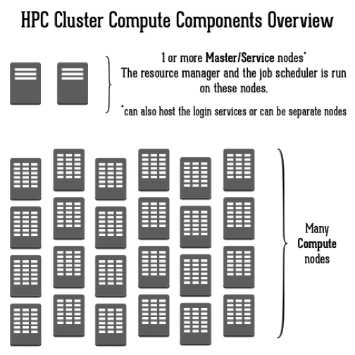
- Large scale clusters have never been more available (e.g Azure, EC2, Bluemix, Compute Engine)
- Even RStudio has an AMI (http://www.louisaslett.com/RStudio_AMI/). I used RStudio and an EC c4.4xlarge instance with it for many of these examples.
- Monitoring, collecting and interpreting the operational data from these hosts is useful to determine various aspects
- Type of calculation / job
- Utilisation of CPU
Type of calculation / job and Utilisation of CPU
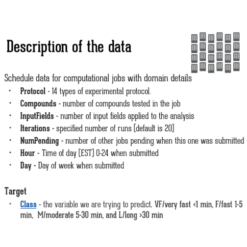
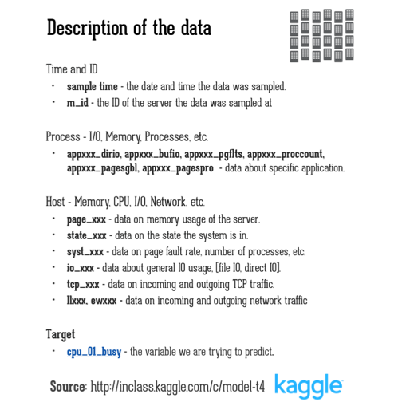
Model Building Process
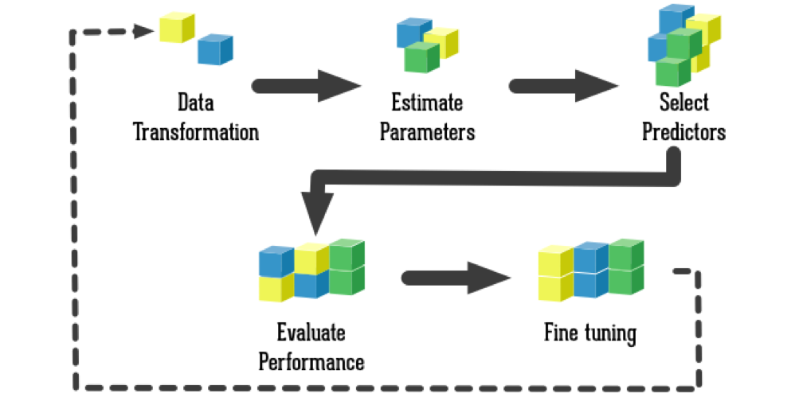
Data Transformations
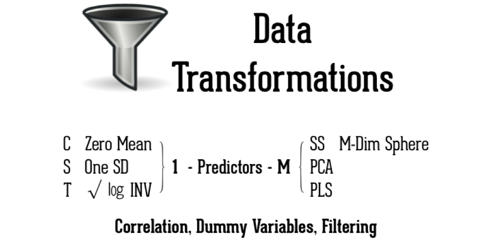
Addressing Feature Selection
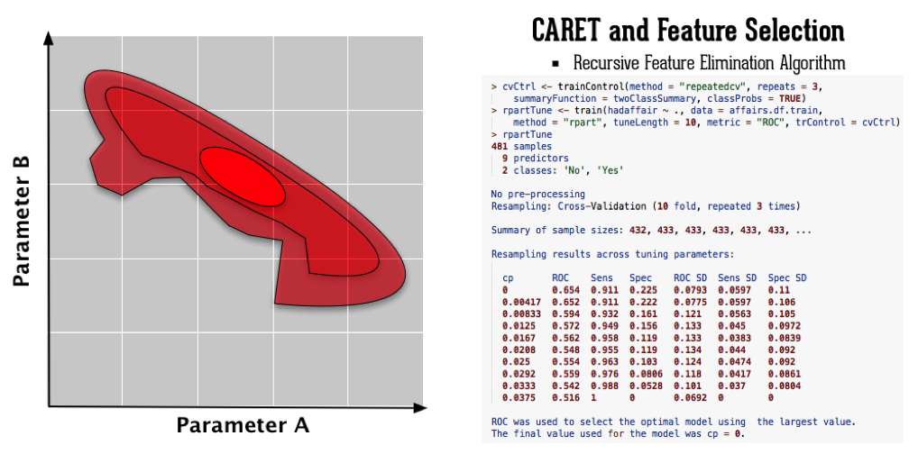
Model Selection and Model Assessment
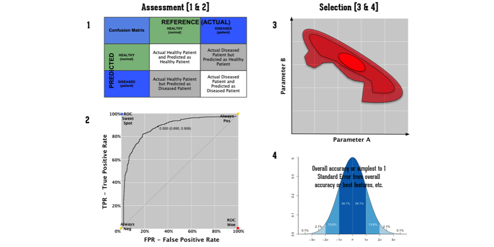
Interpreting A Confusion Matrix
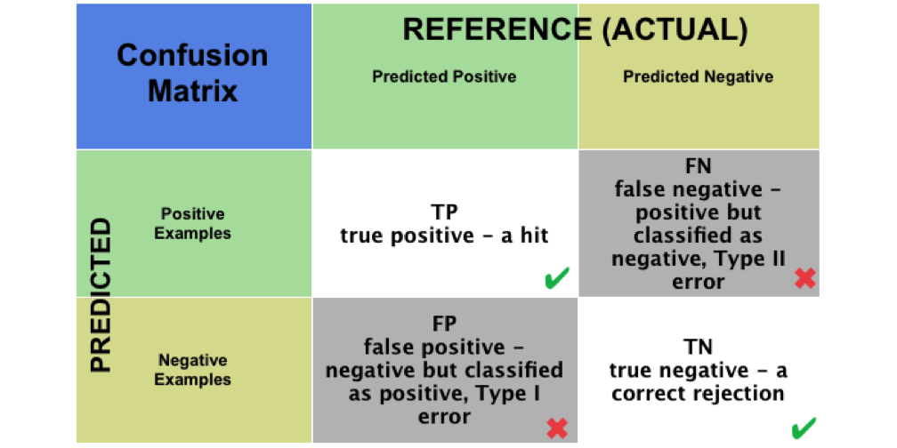
Interpreting A Confusion Matrix Example
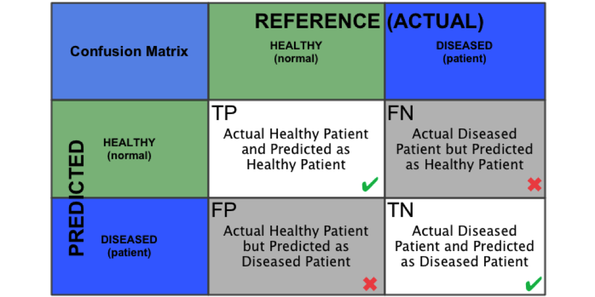
Confusion Matrix - Calculations
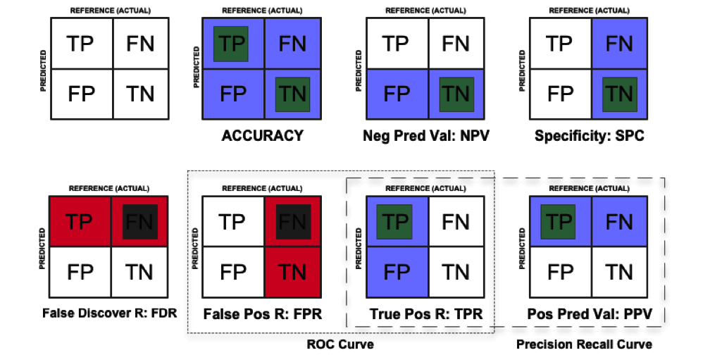
Interpreting A ROC Plot
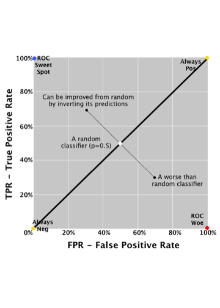
- A point in this plot is better than another if it is to the northwest (TPR higher / FPR lower / or both)
- ``Conservatives'' - on LHS and near the X-axis - only make positive classification with strong evidence and making few FP errors but low TP rates
- ``Liberals'' - on upper RHS - make positive classifications with weak evidence so nearly all positives identified however high FP rates
Addressing Prediction Error
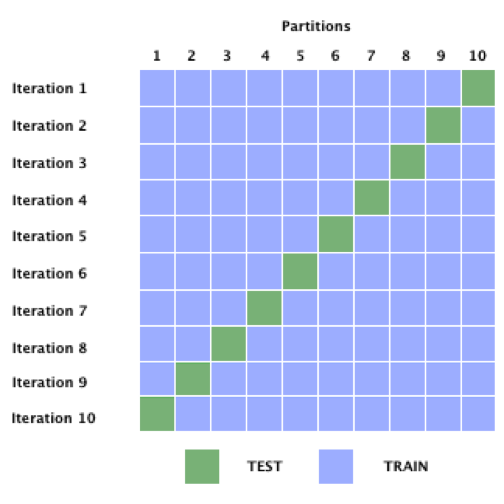
- K-fold Cross-Validation (e.g. 10-fold)
- Allows for averaging the error across the models
- Bootstrapping, draw B random samples with replacement from data set to create B bootstrapped data sets with same size as original. These are used as training sets with the original used as the test set.
- Other variations on above:
- Repeated cross validation
- The '.632' bootstrap
Boosting / Bootstrap aggregation
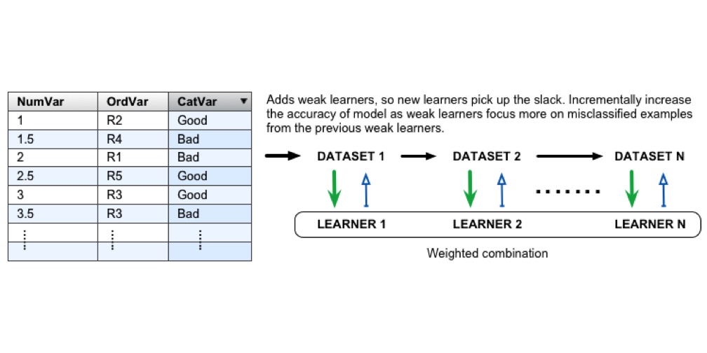
Bagging
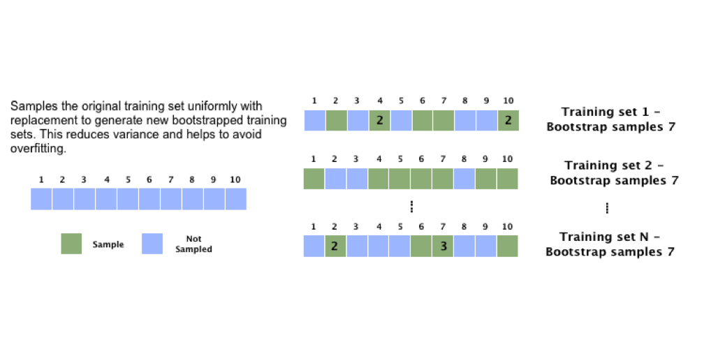
Dataset 1 - Job Scheduling Data
## Protocol Compounds InputFields Iterations
## J : 989 Min. : 20.0 Min. : 10 Min. : 10.00
## O : 581 1st Qu.: 98.0 1st Qu.: 134 1st Qu.: 20.00
## N : 536 Median : 226.0 Median : 426 Median : 20.00
## M : 451 Mean : 497.7 Mean : 1537 Mean : 29.24
## I : 381 3rd Qu.: 448.0 3rd Qu.: 991 3rd Qu.: 20.00
## H : 321 Max. :14103.0 Max. :56671 Max. :200.00
## (Other):1072
## NumPending Hour Day Class
## Min. : 0.00 Min. : 0.01667 Mon:692 VF:2211
## 1st Qu.: 0.00 1st Qu.:10.90000 Tue:900 F :1347
## Median : 0.00 Median :14.01667 Wed:903 M : 514
## Mean : 53.39 Mean :13.73376 Thu:720 L : 259
## 3rd Qu.: 0.00 3rd Qu.:16.60000 Fri:923
## Max. :5605.00 Max. :23.98333 Sat: 32
## Sun:161
Dataset 1 - Job Scheduling Data
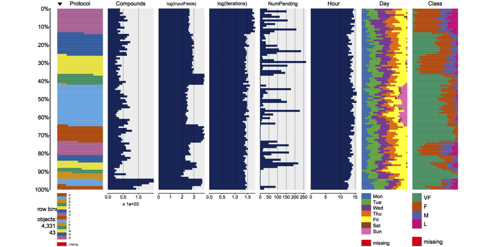
Dataset 1 - Job Scheduling Data - Partitioning and Cost Matrix
## 'data.frame': 3467 obs. of 8 variables:
## $ Protocol : Factor w/ 14 levels "A","C","D","E",..: 4 4 4 4 4 4 4 4 4 4 ...
## $ Compounds : num 97 93 100 100 105 98 101 95 102 108 ...
## $ InputFields: num 103 76 82 82 88 95 91 92 96 104 ...
## $ Iterations : num 20 20 20 20 20 20 20 20 20 10 ...
## $ NumPending : num 3 3 3 3 3 3 3 3 3 3 ...
## $ Hour : num 13.8 10.1 10.4 16.5 16.4 ...
## $ Day : Factor w/ 7 levels "Mon","Tue","Wed",..: 2 5 5 3 5 5 5 3 5 3 ...
## $ Class : Factor w/ 4 levels "VF","F","M","L": 1 1 1 1 1 1 1 1 1 1 ...
## VF F M L
## VF 0 1 5 10
## F 1 0 5 5
## M 1 1 0 1
## L 1 1 1 0
Dataset 1 - Job Scheduling Data - C50 Single Tree
##
## Call:
## C5.0.formula(formula = Class ~ ., data = trainData)
##
## Classification Tree
## Number of samples: 3467
## Number of predictors: 7
##
## Tree size: 199
##
## Non-standard options: attempt to group attributes
## Accuracy Kappa
## 0.8310185 0.7257584
Dataset 1 - Job Scheduling Data - C50 Cross-Validated (10 fold, repeated 5 times) - Part 1
## C5.0
##
## 3467 samples
## 7 predictor
## 4 classes: 'VF', 'F', 'M', 'L'
##
## No pre-processing
## Resampling: Cross-Validated (10 fold, repeated 5 times)
##
## Summary of sample sizes: 3119, 3120, 3122, 3120, 3120, 3120, ...
##
## Resampling results across tuning parameters:
##
## winnow trials Accuracy Kappa Cost Accuracy SD Kappa SD
## FALSE 1 0.8094026 0.6927055 0.3835011 0.01851659 0.03001178
## FALSE 10 0.8345537 0.7318980 0.3442725 0.01469138 0.02393878
## FALSE 20 0.8412999 0.7428217 0.3338396 0.01412315 0.02282365
## FALSE 30 0.8406083 0.7416276 0.3359680 0.01431617 0.02292000
## FALSE 40 0.8412987 0.7426118 0.3366641 0.01425873 0.02311093
## FALSE 50 0.8426812 0.7449319 0.3318168 0.01246685 0.01998607
## FALSE 60 0.8419952 0.7437531 0.3331911 0.01335949 0.02136949
## FALSE 70 0.8423396 0.7443678 0.3319279 0.01406514 0.02248550
## FALSE 80 0.8425691 0.7446598 0.3333175 0.01330740 0.02113161
## FALSE 90 0.8422789 0.7442141 0.3343013 0.01415971 0.02252124
## FALSE 100 0.8423924 0.7443888 0.3358031 0.01398184 0.02233801
## TRUE 1 0.8098057 0.6932152 0.3849491 0.01873836 0.03039064
## TRUE 10 0.8346130 0.7320788 0.3442159 0.01469821 0.02357808
## TRUE 20 0.8407839 0.7419558 0.3338879 0.01427739 0.02320299
## TRUE 30 0.8404354 0.7413244 0.3359104 0.01375501 0.02210552
## TRUE 40 0.8409533 0.7420852 0.3360834 0.01393299 0.02265909
## TRUE 50 0.8421632 0.7441460 0.3314100 0.01238113 0.01992140
## TRUE 60 0.8416507 0.7432257 0.3328386 0.01318599 0.02115722
## TRUE 70 0.8417629 0.7434720 0.3327311 0.01430716 0.02289839
## TRUE 80 0.8418195 0.7434836 0.3338326 0.01354652 0.02157878
## TRUE 90 0.8416452 0.7432490 0.3342393 0.01408687 0.02242716
## TRUE 100 0.8421635 0.7440826 0.3351031 0.01386605 0.02215713
## Cost SD
## 0.04872469
## 0.04339505
## 0.04443300
## 0.04052638
## 0.04300273
## 0.03794953
## 0.03938278
## 0.04061954
## 0.03845357
## 0.03937890
## 0.03962993
## 0.04988016
## 0.04021917
## 0.04391880
## 0.03851951
## 0.04232472
## 0.03733955
## 0.03810535
## 0.04045743
## 0.03877106
## 0.03797577
## 0.03943262
##
## Tuning parameter 'model' was held constant at a value of tree
## Cost was used to select the optimal model using the smallest value.
## The final values used for the model were trials = 50, model = tree
## and winnow = TRUE.
## model winnow trials Accuracy Kappa Cost AccuracySD KappaSD
## 1 tree FALSE 1 0.8094026 0.6927055 0.3835011 0.01851659 0.03001178
## 12 tree TRUE 1 0.8098057 0.6932152 0.3849491 0.01873836 0.03039064
## 2 tree FALSE 10 0.8345537 0.7318980 0.3442725 0.01469138 0.02393878
## 13 tree TRUE 10 0.8346130 0.7320788 0.3442159 0.01469821 0.02357808
## 3 tree FALSE 20 0.8412999 0.7428217 0.3338396 0.01412315 0.02282365
## 14 tree TRUE 20 0.8407839 0.7419558 0.3338879 0.01427739 0.02320299
## 4 tree FALSE 30 0.8406083 0.7416276 0.3359680 0.01431617 0.02292000
## 15 tree TRUE 30 0.8404354 0.7413244 0.3359104 0.01375501 0.02210552
## 5 tree FALSE 40 0.8412987 0.7426118 0.3366641 0.01425873 0.02311093
## 16 tree TRUE 40 0.8409533 0.7420852 0.3360834 0.01393299 0.02265909
## 6 tree FALSE 50 0.8426812 0.7449319 0.3318168 0.01246685 0.01998607
## 17 tree TRUE 50 0.8421632 0.7441460 0.3314100 0.01238113 0.01992140
## 7 tree FALSE 60 0.8419952 0.7437531 0.3331911 0.01335949 0.02136949
## 18 tree TRUE 60 0.8416507 0.7432257 0.3328386 0.01318599 0.02115722
## 8 tree FALSE 70 0.8423396 0.7443678 0.3319279 0.01406514 0.02248550
## 19 tree TRUE 70 0.8417629 0.7434720 0.3327311 0.01430716 0.02289839
## 9 tree FALSE 80 0.8425691 0.7446598 0.3333175 0.01330740 0.02113161
## 20 tree TRUE 80 0.8418195 0.7434836 0.3338326 0.01354652 0.02157878
## 10 tree FALSE 90 0.8422789 0.7442141 0.3343013 0.01415971 0.02252124
## 21 tree TRUE 90 0.8416452 0.7432490 0.3342393 0.01408687 0.02242716
## 11 tree FALSE 100 0.8423924 0.7443888 0.3358031 0.01398184 0.02233801
## 22 tree TRUE 100 0.8421635 0.7440826 0.3351031 0.01386605 0.02215713
## CostSD
## 1 0.04872469
## 12 0.04988016
## 2 0.04339505
## 13 0.04021917
## 3 0.04443300
## 14 0.04391880
## 4 0.04052638
## 15 0.03851951
## 5 0.04300273
## 16 0.04232472
## 6 0.03794953
## 17 0.03733955
## 7 0.03938278
## 18 0.03810535
## 8 0.04061954
## 19 0.04045743
## 9 0.03845357
## 20 0.03877106
## 10 0.03937890
## 21 0.03797577
## 11 0.03962993
## 22 0.03943262
## Cross-Validated (10 fold, repeated 5 times) Confusion Matrix
##
## (entries are un-normalized counts)
##
## Reference
## Prediction VF F M L
## VF 164.6 17.1 1.7 0.2
## F 11.8 83.6 11.6 1.7
## M 0.4 6.2 27.0 2.1
## L 0.1 0.9 0.9 16.8
## VF F M L
## VF 0 1 5 10
## F 1 0 5 5
## M 1 1 0 1
## L 1 1 1 0
Results of a variety of approaches focus on Cost metric
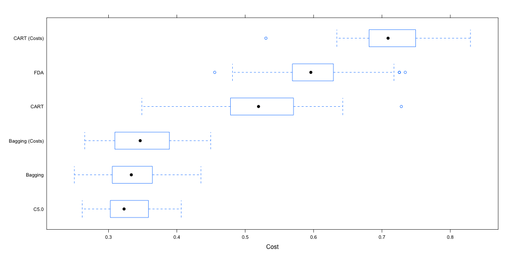
Dataset 2 - CPU Burn Kaggle

Dataset 2 - CPU Burn Kaggle
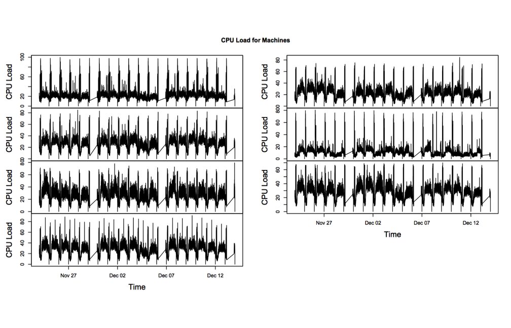
Dataset 2 - CPU Burn Kaggle
## syst_direct_ipo_rate syst_buffered_ipo_rate syst_page_fault_rate
## 1 80.48 1261.97 15.55
## syst_page_read_ipo_rate syst_process_count syst_other_states
## 1 2.1 271 12
## page_page_write_ipo_rate page_global_valid_fault_rate
## 1 6.23 4.67
## page_free_list_size page_modified_list_size io_mailbox_write_rate
## 1 138749 100100 7.98
## io_split_transfer_rate io_file_open_rate io_logical_name_trans
## 1 0 2.82 670.32
## io_page_reads io_page_writes page_free_list_faults
## 1 4.02 15.25 0.98
## page_modified_list_faults page_demand_zero_faults state_compute
## 1 0.35 7.47 5
## state_mwait state_lef state_hib state_cur sun mon tue wed thu fri sat
## 1 0 212 42 2 0 0 0 1 0 0 0
## is_cpu_busy
## 1 1
Dataset 2 - CPU Burn Kaggle
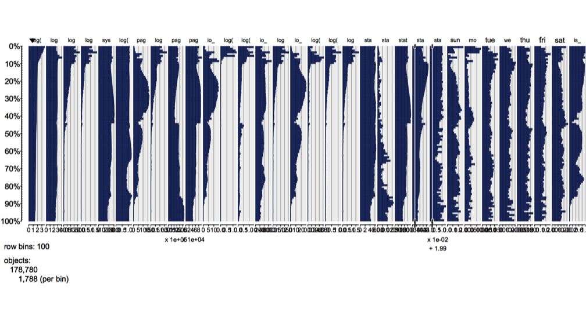
Dataset 2 - CPU Burn Kaggle - Feature Selection 2
## [1] "nearZeroVar:"
## [1] "syst_page_read_ipo_rate" "page_page_write_ipo_rate"
## [3] "page_global_valid_fault_rate" "io_split_transfer_rate"
## [5] "io_page_reads" "io_page_writes"
## [7] "page_free_list_faults" "page_modified_list_faults"
## [9] "state_mwait" "state_cur"
## [11] "mon"
## [1] "high correlation .75+:"
## [1] "syst_page_fault_rate" "page_global_valid_fault_rate"
## [3] "syst_page_read_ipo_rate" "io_page_reads"
## [5] "page_modified_list_faults" "page_free_list_size"
## [7] "page_modified_list_size" "syst_process_count"
## [9] "page_page_write_ipo_rate" "io_page_writes"
Dataset 2 - CPU Burn Kaggle - Feature Selection 2
## [1] "After removing nearZeroVar and high correlation .75+:"
## [1] "syst_direct_ipo_rate" "syst_buffered_ipo_rate"
## [3] "syst_other_states" "io_mailbox_write_rate"
## [5] "io_file_open_rate" "io_logical_name_trans"
## [7] "page_demand_zero_faults" "state_compute"
## [9] "state_lef" "state_hib"
## [11] "sun" "tue"
## [13] "wed" "thu"
## [15] "fri" "sat"
## [17] "is_cpu_busy"
Dataset 2 - CPU Burn Kaggle - Feature Selection 3
## [1] "Applying BoxCox, Centering, Scaling and PCA to data:"
##
## Call:
## preProcess.default(x = cpuburn.data.df.reduced, method =
## c("BoxCox", "center", "scale", "pca"))
##
## Created from 178780 samples and 17 variables
## Pre-processing: Box-Cox transformation, centered, scaled,
## principal component signal extraction
##
## Lambda estimates for Box-Cox transformation:
## Min. 1st Qu. Median Mean 3rd Qu. Max. NA's
## -2.00 -0.65 0.70 -0.20 0.70 0.70 14
##
## PCA needed 15 components to capture 95 percent of the variance
Dataset 2 - CPU Burn - C50 Single Tree
## syst_direct_ipo_rate syst_buffered_ipo_rate syst_process_count
## 4 68.75 495.10 224
## 5 47.45 436.65 253
## page_page_write_ipo_rate page_global_valid_fault_rate
## 4 2.58 1.1
## 5 2.48 1.1
## page_free_list_size page_modified_list_size io_page_reads io_page_writes
## 4 200705 54727 0.93 8.18
## 5 176726 69647 0.93 6.22
## page_modified_list_faults is_cpu_busy
## 4 0.13 1
## 5 0.12 0
## RMSE Rsquared
## 0.1998557 0.8284657
Results of Logistic Regression and PLS approaches
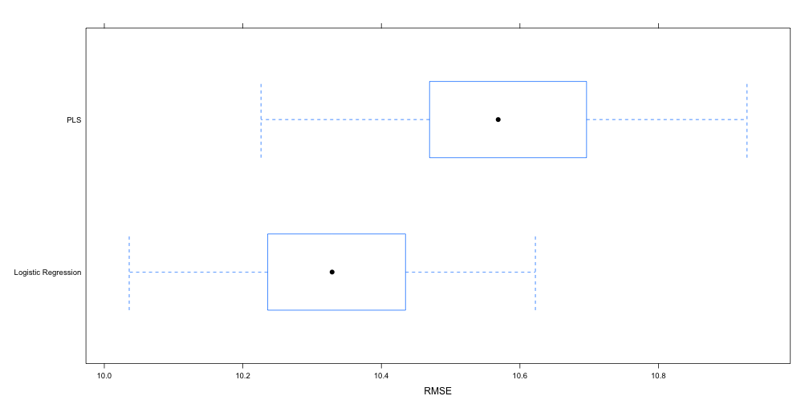
Results of Random Forest approach
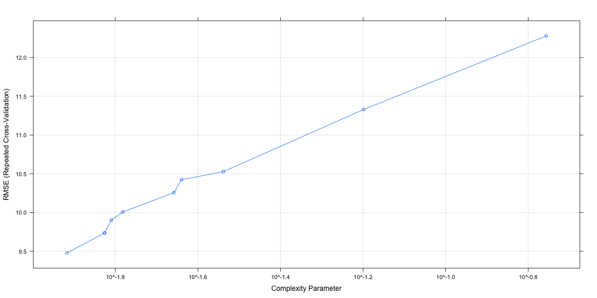
In Summary
An idea of some of the types of classifiers available in ML.
What a confusion matrix and ROC means for a classifier and how to interpret them
An idea of how to test a set of techniques and parameters to help you find the best model for your data
Slides, Data, Scripts will be put up on GH:
https://github.com/braz/DublinR-ML-machines
Aside - How do decision trees work ?
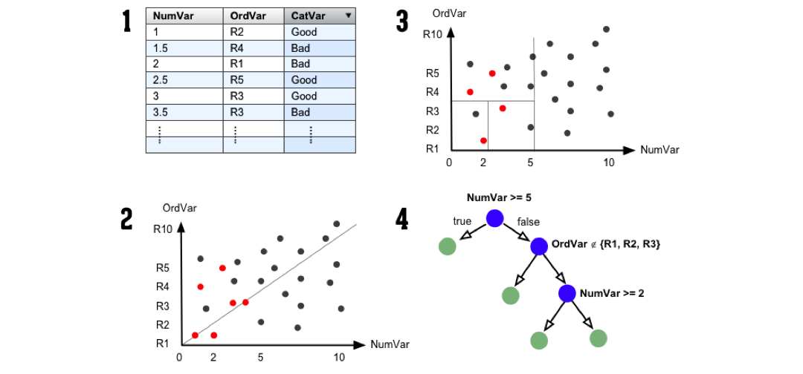
Aside - How does a random forest work ?
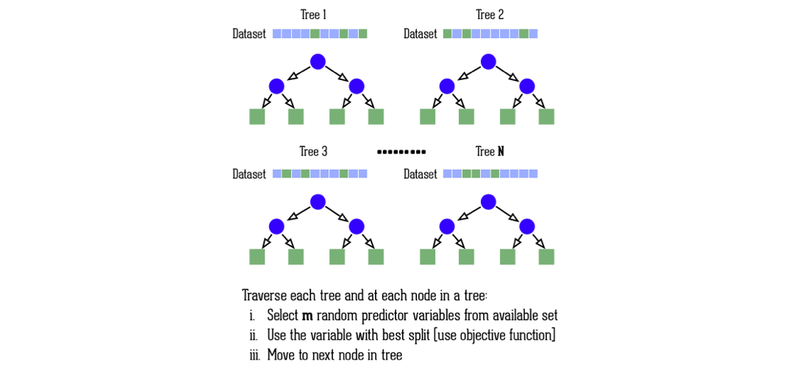
Aside - How does k nearest neighbors work ?
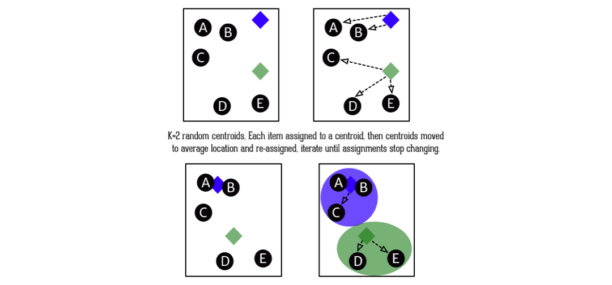
Aside - How do support vector machines work ?
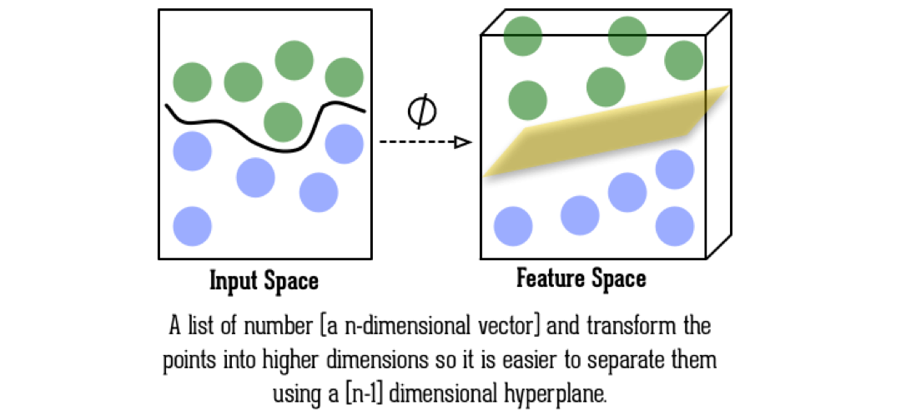